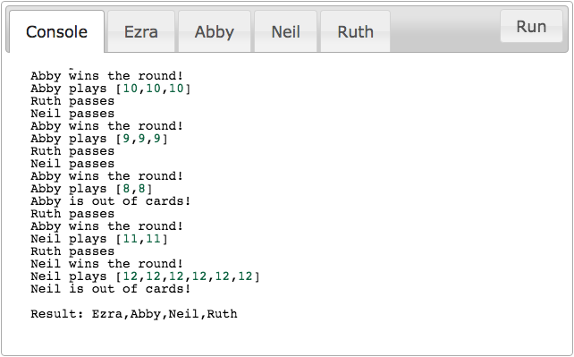

Presidents, Scumbags, Kings and Arseholes, and The Great Dalmuti
One of my favourite card games is The Great Dalmuti. It’s a variant of a widely-played card game with many, many names: President, Scumbag, Kings and Arseholes. Each of these may have slightly different rules, and slightly different decks, but they are all more or less the same game.
I’ve had a bunch of discussions about this game over the years, most of which were about the possible strategies. Personally, I don’t believe that this game is all that hard to play well—and consequently, that it isn’t all that hard to write an AI for it. Pehaps even a very simple, rule-based AI can play passably. However, friends of mine think that it is a much harder problem, and that much more advanced techniques will be needed. Therefore, I thought I’d write a little playground for AIs to play in.
I’ll get back to that later in this post, though if you’re familiar with the game, you may as well skip the next section.
The Rules
Before I get to showcasing my playground, it’s probably prudent to at least briefly talk about the game. The rules of the game are fairly simple, so I’ll summarise them here:
- Rank: Each player has a rank, with the top ranks usually called something like “president” and “vice president”, and the lower ranks called something like “scumbag” and, well, “vice scumbag”;
- Setup: To start the game, all the cards in the deck are distributed evenly amongst the players; the highest ranking player then starts the first round;
- Rounds: Starting with the player who starts that round (obviously) each player either plays some cards or passes, and the turn passing to the next in rank (after the lowest rank, the turn passes to the highest in rank);
- Legal Plays: A play is legal if:
- it is the first play, and the cards are all identical in number; or
- there are previous plays, the new play has the same number of cards as the previous plays, and all of the cards in the play are the identical in number and strictly “better” than those of the previous play.
- Winning the Round: Once there is an entire round of passes, the player who was the last to play cards wins the round, and starts the next one;
- Winning the Game: The goal is for players to get rid of all of their cards as fast as possible. The order in which they do so, determines their ranks in the next game, with the first player to finish becoming the highest in rank, the second the second highest, and so on.
Each variant of the game adds their own rules to this, but this much is shared by more or less all of them. Note that I haven’t said anything about what cards there are in the deck—this is because every variant is played with a different deck, and with different rules as to which card is “better” than which other. I’ve played many variants of this game, but there’s just something pleasing about the deck The Great Dalmuti uses—one one, two twos, three threes, up to twelve twelves—plus, I own a copy of it, so why not use it as an example? Anyway, The Great Dalmuti adds the following rules:
- Deck: It uses the deck outlined above (with one one, two twos, three threes, up to twelve twelves). Confusingly, the lower cards are “better”, so a
1is better than a5, which in turn is better than a12; - Jokers: There are two jokers, which are counted as a
13when played by themselves. However, they can be used to complete any set. For instance,[3,13,13]is a legal set of three threes; - Taxation: Before the game starts, there is a “taxation”. During taxation, The lowest ranking player gives their two best cards to the highest ranking player, and gets any two cards in return. The second lowest and second highest player exchange a single card in a similar manner;
- Revolution: Before the taxation, there is a check. If any player has both jokers in their hand, they may cry “Revolution!” If this happens, the taxation phase is skipped; if the lowest ranking player cries “Revolution!”, instead of skipping the taxation, there is an actual revolution—the lowest ranking player changes places with the highest ranking player, and the second lowest ranking player changes places with the second highest ranking player.
An AI Playground
As I mentioned above, I feel that a very simple, rule-based AI could already competently play The Great Dalmuti. As a first step in demonstrating this, I’ve written a small playground where AIs can compete with one another. Below, you should see a number of tabs, the first of which is labelled ‘Console’. In it, there should be a button that looks like this: ▶. If you click it, the AIs in the other tabs will be pitted against one another in a game of The Great Dalmuti. Try it!

In implementing the game, I’ve made one small concession—while it isn’t technically forbidden by the original rules, most players would probably say that a pass isn’t a legal opening move. Why would you? However, in order to keep faulty AIs from breaking up the flow of the game, I’ve implemented it such that it is. This means that, in the game above, if your AI attempts an illegal move, or throws an error, it is taken as a pass instead. Furthermore, if your AI attempts to abuse the taxation system by giving away too many or too few cards, it is instead penalised by giving the best cards.
The default AIs—for now—are a little disappointing. There are some functions built into my implementation. Most interestingy, playWorstCards and giveWorstCards both pick whatever your worst possible cards are, and dump them. They’re not incredibly intelligent in doing so, but they’re the best thing that comes with the playground. These functions form Abby and Ezra’s AIs, so amongst the default implementations, they’re the only ones who really have a shot.
Much worse are playBestCards and giveBestCards, which make up Neil’s AI, eager as he is to show how great his cards are, even if it means giving them to other players. And then finally, there’s Ruth. She’s just very nice, and wants to give other players a chance, so she’s been written to pass every turn, even if she’s starting a round. And when it comes to giving away cards, she just gives away the cards that she would be happiest receiving. So, you know, obviously there’s some room for improvement in the department. At least, if competitive play is your goal.
Write your own AI
I’d love to make it easy for you, and tell you that you can write your AI in any language you want, but the matter of the fact is that you’re reading this on what is basically a huge JavaScript interpreter. So AIs are written in JavaScript.
If you have a look at the code of, for instance, Ezra, you will see that what you need to define is an object with two functions: play and give. The play function is given your player name (just for your convenience) and an object representing the current game state. A game object usually looks something like this:
game =
{ active : ['Abby','Ezra','Neil','Ruth']
, finished : []
, ranks : ['Neil','Ruth','Abby','Ezra']
, plays : [ ['Ruth',[]]
, ['Neil',[5,5]]
, ['Ezra',[11,11]]
, ['Abby',[12,12]]
]
, hands :
{ Ezra : [0,0,0,0,0,0,0,0,0,0,0,0,0,0,0,0,0,0,0]
, Neil : [0,0,0,0,0,0,0,0,0,0,0,0,0,0,0,0,0,0,0]
, Abby : [1,3,4,4,5,6,6,7,8,8,9,9,9,10,10,11,11]
, Ruth : [0,0,0,0,0,0,0,0,0,0,0,0,0,0,0,0,0,0,0,0]
}
}As you can see, game tells you which players are still in the game, and in which order they’re up (spoiler: you’re first) and who have already finished. Furthermore, it tells you the players’ original ranks (in this case, Neil is top chicken).
Using game.plays, you can find out what the players who have gone before you have played. As you can see, before you came Ruth, who passed—no surprises there—and before that, Neil played two fives. Before that came Ezra, and before that Abby, who started the round by playing two twelves.
Last, there’s a field called “hands”. Obviously, some meddling has gone on here, since no, the other players aren’t holding hands full of zeros. However, isn’t this a quaint way of showing how many cards they are holding? And in addition, your get to see your own hand! Just call game.hands[player]!
The second function, give is much simpler. You’re given your hand of cards, and some number n, and you have to choose n cards to give away. The usual implementation is giveWorstCards, which simply opts to give away your worst cards, potentially breaking up a set. Obviously, this is not quite optimal—it may, e.g. break up a set of three to leave you with one twelve, or it may give away two perfectly good twelves while you have a single eleven and ten.
As a final tip for this section: there’s a function built into my implementation of The Great Dalmuti, allPlays(allowSplit,game), which returns all legal moves. The second argument, game, is simply the game state that you’ve been passed. The first argument, allowSplit, is a boolean flag. If allowSplit is set to true, then the returned moves will include moves which break up sets. Otherwise, well, it won’t.
Join in on the fun!
Let me leave you with a small snippet of JavaScript. The below code, if copied into one of the AI slots above—I recommend Ruth—will allow you to join in on the fun! It will prompt you, ever time it’s your move, with a request as to which move you’d like to make:
({
play : function(player,game) {
var hand = JSON.stringify(game.hands[player]);
var play = JSON.stringify(playWorstCards(game));
var resp = JSON.parse(
prompt( "Your hand is "+hand+".\n"
+ "What would you like to play?"
, play));
return (Array.isArray(resp)) ? resp : [];
},
give : function (player,n,hand) {
var give = JSON.stringify(giveWorstCards(n,hand));
var resp = JSON.parse(
prompt( "Your hand is "+hand+".\n"
+ "What would you like to give?"
, give));
return (Array.isArray(resp)) ? resp : [];
}
});That’s it for now. I’ll be back later with a proper AI for The Great Dalmuti—though, I probably won’t be implementing it in JavaScript. If you’ve had a look under the hood, you may have noticed a bunch of completely garbled JavaScript files. This is because I’ve actually implemented the game in Haskell, and compiled it to JavaScript using GHCJS—which is awesome! Thanks a whole bunch to the GHCJS project, helping Haskell get into the browser!